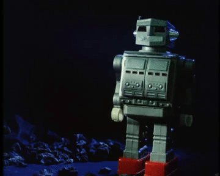
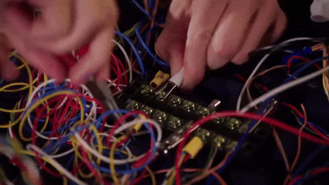
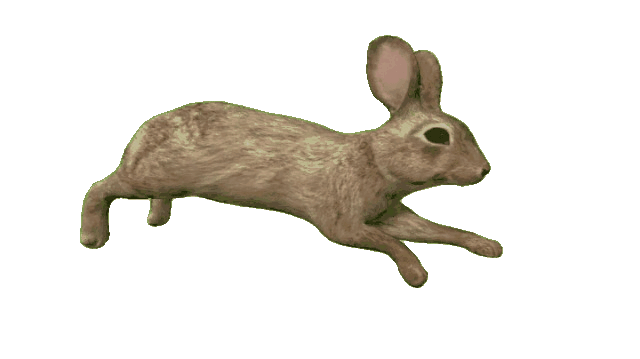

| Ingredients | | Quantity | |
|---|---|---|
| Bent Wires | : 10 cups | |
| chicken broth | : 3 cups | |
| sausage | :3 lbs |
Step 1: Acquire a robotic body and remove all of the wires.

This may be difficult, but a good approach is using a pair of pilers and a wire cutter.
Step 2: Slice the wires in half and extract the rubber surrounding each wire.
Step 3: Grab a large pot and place all of the wires, broth, and sausae in the pot. Set the cooking temperature to 1000 degrees celeius and stir slowly
Step 4: after 2900 years of simmering, the wires will be melted down. This step is very important. Take the molten metal and place it in the freezer
Step 5: After 100 years in the freezer the metal soup will be solidified. You are long gone at this point. Your great-great-great-great-great grandchild should take the solidifed metal and shave it into chunks with a cheese grinder.
Step 6: Take the shaven chunks and place them in a coffee cup. Eat slowly and secret knowledge will be gained.
Source: the most nice website
